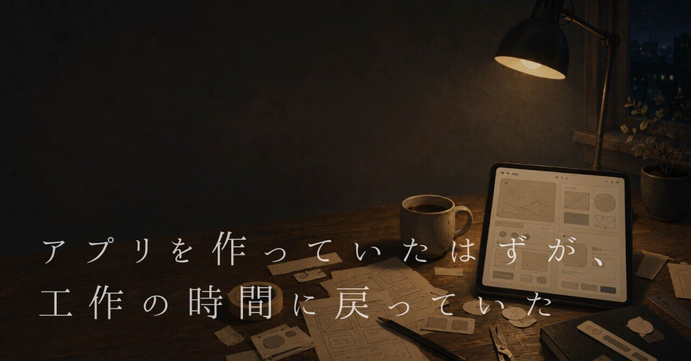

アプリを作っていたはずが、工作の時間に戻っていた
子どもの頃、テレビの中で紙や空き箱を切って工作をする「わくわくさん」に憧れていた。
ハサミが画用紙を切る音。
ぺたっとくっつけるセロハンテープ。
ただの箱が、少しの工夫で動くおもちゃに変わっていく。
その時間が好きだった。
見よう見まねで作ってみても、テレビのようにはうまくいかない。
まっすぐ立たず、テープも丸見え。
それでも、なぜか楽しかった。
少し成長し、パソコンを触るようになると、
今度はFlashで作られたゲームやアニメに夢中になった。
クリックすると動きだす面白さ、
手作り感のあるアニメーションやミニゲーム。
遊ぶたびに、おもちゃ箱を覗いているような気分になった。
自分でも作ってみたかったけど、
当時はその方法が分からなかった。
最近になって、iPhoneとAIのおかげで、
ようやく自分の画面に好きなものを置けるようになった。
気がつくと、自分専用のアプリをいくつも作っていた。
AIに作ってもらっているようで、
最後はやっぱり自分の手で触っていた。
色を少し変える。
影を薄くする。
ボタンを数ピクセルだけ動かす。
微調整を繰り返していると、
理屈では説明できないソワソワが、
ふっと消える瞬間があった。
それは、子どもの頃に
紙や箱を触っていた時間に少し似ていた。
その延長で、ゲームも作ってみたいと思った。
最初は理屈から考えてみた。
ボードゲームの仕組みを調べる。
盤面を作って、ルールを並べ、勝ち負けを決める。
ちゃんと動いた。でも、何か違った。
触っていて、あまり楽しくなかった。
少しずつ削っていくうちに、最後に残ったのは、
なぜか二人で焼き鳥を焼き合う画面だった。
美味しいのは一瞬、
焦げるのも一瞬。
強火にするか、弱火にするか、少しだけ迷う。
それだけのゲームになった。
 「ボードゲームの作り方」が分からなかったので、アプリで再現してみた「ボードゲームの作り方」について読んだことがありました。『自分だけのボードゲームを作ろう』という本です。リソースの管理やジレンマの設計など、少し難しいですが、書いてある仕組みはなんとなく分かりました。ただ、オセロや人生ゲームぐらいしか遊んだ経験がなく、「なぜそれが面白いのか」までは、よく分からないままでした…
「ボードゲームの作り方」が分からなかったので、アプリで再現してみた「ボードゲームの作り方」について読んだことがありました。『自分だけのボードゲームを作ろう』という本です。リソースの管理やジレンマの設計など、少し難しいですが、書いてある仕組みはなんとなく分かりました。ただ、オセロや人生ゲームぐらいしか遊んだ経験がなく、「なぜそれが面白いのか」までは、よく分からないままでした…
最近は「#触れるらくがき」という名前で、
アプリ未満、ゲーム未満の小さなものを作っている。
機能はない。役にも立たない。
指で触ると少しだけ変なことが起きる。
気がつくと、時間が溶けていた。
何も完成していない。
でも、また次が作りたくなった。
今振り返ると、
工作も、アプリも、ゲームも、
あまり違わなかったのかもしれない。
完成品が欲しかったというより、
触って、動かして、少し直す。
その繰り返しの中で、
思いがけないものが形になる時間が好きだった。
完成しなくてもいい。
役に立たなくてもいい。
ただ手を動かして、
気になるところを直しているうちに、
また次のものが生まれてくる。
子どもの頃から、ずっと同じことを続けているのかもしれない。